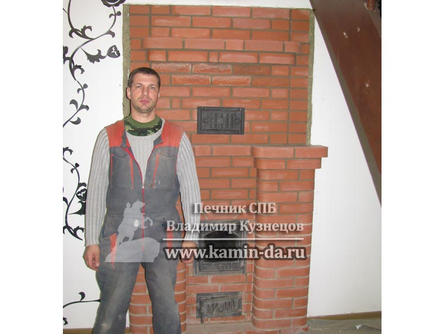

Печи для бани из кирпича с Закрытой каменкой

В этой статье мы будем рассматривать кладку печей для бани из кирпича с закрытой каменкой, или как их ещё называют, печи для бани из кирпича прямого действия. Именно русская печь из кирпича славится своим паром - такой пар наиболее благоприятен для здоровья. Но обо всём - по порядку!
Печи для бани на дровах из кирпича в СПБ
Уважаемые заказчики, если у вас появилось желание иметь у себя на даче печь для бани на дровах из кирпича, то вы проделали огромный путь, раз пришли к этому понимаю. Сейчас огромное множество более простых в установке и гораздо более дешевых в цене железных и чугунных печек, и тягаться с ними печам для бани из кирпича очень тяжело. Но ценители и те, кто понимает, какие преимущества даст вам такая печь, давно для себя уяснили, что здоровье - это самое дороге и ценное, что может быть в нашей жизни!
Совсем недавно я построил такую печь для бани на дровах из кирпича, и в подтверждение этому, моя работа № 130. Печь получилась интересная, и на её примере я распишу все особенности печей для бани из кирпича. И если, к примеру, с уличными печами барбекю заказчикам все значительно яснее, то тут без разбора по полочкам - не обойтись.
Строительство печи каменки для бани из кирпича
Печь каменка из кирпича - конструкция сложная, и в Петербурге далеко не каждый возьмется за строительство печи для бани из кирпича. Основной недостаток такой работы для печника вытекает из конструктивных особенностей печи, о которых я для начала расскажу.
Главное преимущество печи каменки для бани - это возможность нагревать камни до высочайших температур. Одно из названий печи, Печь прямого действия - косвенно нам говорит о конструктивной особенности нагрева камней. Смысл нагрева в том, что между камнями и огнем не существует ни железной, ни кирпичной прослойки. Камни располагаются на своеобразной решетчатой поверхности, выполненной из огнеупорного кирпича, а под отверстиями в этом решетчатом основании - огонь от растопленных дров. Во время топки наша печь каменка из кирпича прямого действия раскаляет камни докрасна открытым пламенем.
Камни при такой растопке нагреваются до рекордных температур - 800-900 градусов по цельсию. Только такая температура камней даёт самый лучший русский пар - мягкий, комфортный для парки. Если сравнивать с паром от железных печей, то там камни располагаются на железной верхней стенке печки, и при таком положении они не нагреваются выше 300 градусов. Используя камни такой температуры в парной вы получите более сырой, "тяжелый" пар. Именно от использования железных печей у многих людей возникает дискомфорт от посещения бань.
Стоит сказать, что Печь для бани из кирпича с закрытой каменкой прямого действия, имея колоссальное преимущество по сравнению с железными, электрическими печками, имеет некоторые особенности, которые часть заказчиков сочтут неприемлемыми. Я обязан рассказать про это в следующем разделе!
Кладка печи для бани из кирпича в СПБ
Вторым главным преимуществом для выбора кладки печей для бани из кирпича является способность отопить целый дом. Как правило такую печь устанавливают не в крохотных баньках с парной 2х1, ведь сама по себе печь имеет размер не меньше 1м\1м. А для того, чтобы отопить вашу баню из сруба размерами не более чем 5х5, потребуется определенный источник отопления. Печь для бани из кирпича каменка станет именно таким источником отопления. От такой печи тепло будет и в парной, и в предбаннике, и в помывочной, и в гостиной, и даже на втором этаже! Согласитесь, это - неоценимое преимущество.
Ведь, имея всего лишь железную печку вам придется дополнительно думать о том, как прогреть всю баню, а уж тем более -гостевые спальни на втором этаже.
Закажите кладку печи для бани из кирпича - и вы сразу же решите два вопроса : и в парной будет лучший русский пар, и вся баня будет теплой в любое время года!
А на следующей фотографии - работа № 132, печь каменка для бани из кирпича - вид из парной. Отделение для камней закрыто специальной дверцей.
А теперь следует уведомить вас, дорогие заказчики, что печь каменка из кирпича для бани имеет два небольших минуса, которые стоит учесть при заказе. Предупредить об этом я просто не могу, ведь я ответственный за кладку печи для бани из кирпича!
Во-первых, это - печь прямого действия. И пока камни не раскалятся докрасна, открывать отделение для камней нельзя, иначе вся парная сразу же заполнится дымом. Этот конструктивный минус будет незаметен для владельцев загородных домов с постоянным проживанием. А вот дачники ,приезжающие всего на день-два будут всё же несколько смущены, ведь такая печь из кирпича для бани топится, как и любая кирпичная печь - дольше, чем железная буржуйка!
Печь требует 3-4 часа, чтобы быть полностью протопленной. Однако и тепло в парной и во всем доме она держит гораздо дольше, чем железная. Сравнивая с буржуйками, печь для бани из кирпича не требует дополнительной растопки в течение целых 6-8 часов! Это означает, что если вы весь вечер отдыхаете - то можете париться в несколько заходов целый вечер. Это очень удобно, если вы приглашаете несколько семей, друзей, и места всем вместе может не хватить!
Надеюсь, мои советы будут для вас полезными! Для более подробной консультации вы всегда можете позвонить мне на прямой мобильный номер, даже если я на объекте - я стараюсь сразу же отвечать!
С уважением, Печник в Санкт-Петербурге, Владимир Кузнецов